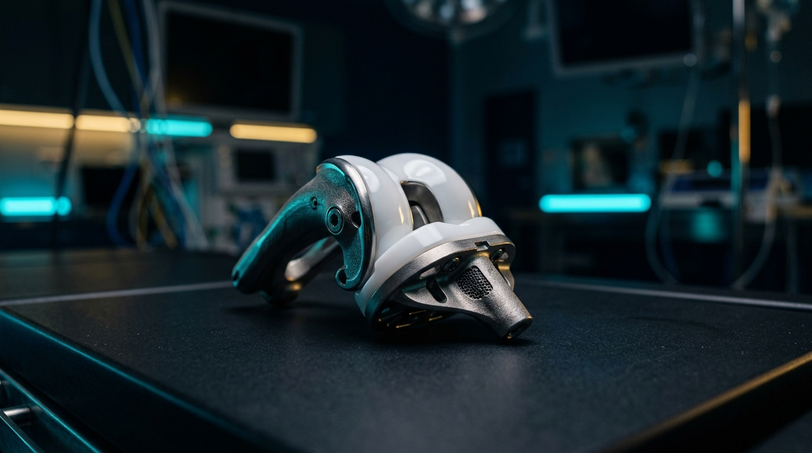

ARTHROPLASTYاستبدال مفاصل الركبة والحوض بأحدث التقنيات العالمية
عند وصول تآكل الغضروف إلى مراحله المتقدمة، نقدم جراحات استبدال المفاصل بأعلى المفاصل العالمية جودة والمصنعة من سبائك التيتانيوم ومواد البولي إيثيلين المعالجة، لضمان ثبات كامل واستعادة طبيعية للمشي مع برامج تأهيل حركي فورية.
✓ استبدال مفصل الركبة الكلي والجزئي عالي الدقة
✓ استبدال مفصل الحوض (الفخذ) مع الحفاظ على الأنسجة
✓ برامج تأهيل حركي فورية بعد الجراحة
✓ توازن ميكانيكي دقيق للمفصل لتفادي أي عرج